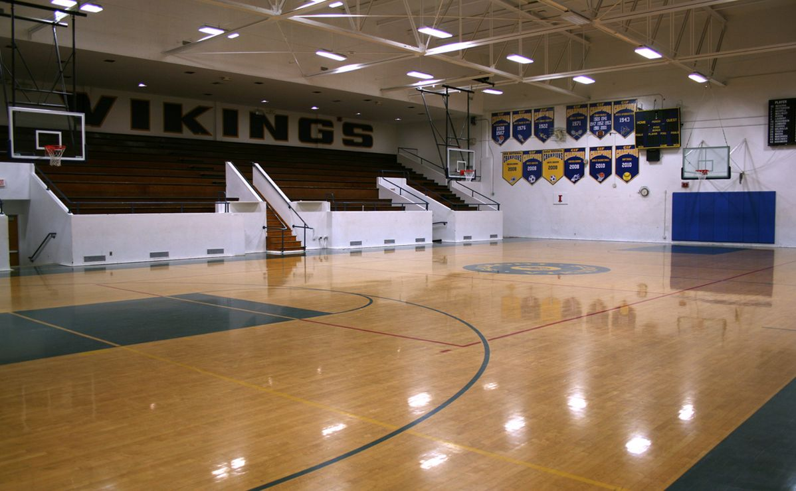

Aula de Educação Física.
Era uma das disciplinas mais queridas pela maioria esmagadora dos alunos daquela escola. E, convenhamos, não era difícil entender o motivo. Afinal, quem em sã consciência escolheria passar horas trancado em uma sala fria, encarando explicações intermináveis sobre Língua Francesa, Álgebra ou Química, quando podia simplesmente correr atrás de uma bola, arremessar cestas ou se jogar em uma partida improvisada de futebol americano com os amigos?
Assim que a notícia se espalhava, o clima mudava. Alguns estudantes praticamente comemoravam, soltando risadas altas e suspiros de alívio, enquanto outros já começavam a montar times, discutir posições e bolar estratégias que, na maioria das vezes, nunca saíam do papel. No fundo, tudo aquilo era apenas uma tentativa coletiva de adoçar o gosto amargo da rotina acadêmica, um respiro necessário em meio ao cansaço mental acumulado ao longo da semana.
No entanto, nem todos compartilhavam desse entusiasmo. Era um grupo pequeno, quase invisível dentro da massa barulhenta, mas que existia.
E Miska fazia parte dele.
Ela estava sentada em um canto qualquer da arquibancada do ginásio, afastada do burburinho, com um livro de Química aberto sobre o colo. Ao seu lado esquerdo, dois outros volumes, um de literatura e outro de história, permaneciam empilhados, aguardando pacientemente sua vez. À direita, Ashley acompanhava a leitura, inclinando-se levemente para tentar entender o que Miska rabiscava no papel. Sua expressão oscilava entre fascínio genuíno e confusão absoluta; observar Miska resolver cálculos complexos, cuja lógica escapava completamente à sua compreensão logo na primeira linha, era algo tão intrigante quanto impressionante.
— Você é meio maluca, sabia? — comentou Ashley, com um sorriso divertido e um tom leve, longe de qualquer julgamento.
Miska permaneceu alguns segundos encarando o nada, como se precisasse de tempo para retornar à realidade. Só então virou o rosto em direção a Ashley, com uma expressão levemente perdida. Por um instante, parecia que ela não estava no mesmo mundo que a amiga, mas mergulhada em um universo próprio, feito de fórmulas químicas, números e raciocínios que só ela parecia habitar.
— Hã? O que? — Miska murmurou, piscando algumas vezes enquanto alternava o olhar entre a página aberta à sua frente e o rosto de Ashley. A reação dispersa arrancou um sorriso imediato da garota, que parecia se divertir com o fato de ter conseguido puxá-la de volta à realidade.
— Tirei sua concentração, foi? — Ashley provocou, inclinando a cabeça para o lado, exibindo um sorriso meio bobo, meio travesso. — Eu falei que você é meio maluca, né? Porque só você pra conseguir decifrar esse amontoado de conta. Tá maluco!
Miska soltou um suspiro curto antes de responder.
— Ah… é que… — começou, voltando os olhos para a folha de exercícios, completamente tomada por números, símbolos e setas que, para qualquer um naquela quadra, mais pareciam rabiscos caóticos de alguém à beira de um colapso mental. — Olha, não é tão simples quanto parece. É um saco, na verdade! Eu fico refazendo os cálculos mil vezes na cabeça antes de colocar no papel. E o pior é quando, mesmo assim, dá errado. Aí tenho que apagar tudo e começar de novo e de novo.
Ela tentava justificar aquele nível quase obsessivo de concentração sem soar como uma nerd, embora a ansiedade escapasse sutilmente pela voz apressada. Antes que pudesse se embrenhar ainda mais na explicação, Ashley percebeu o nervosismo e passou a mão pelos cabelos de Miska, acariciando-os com cuidado e cortando completamente o fluxo de pensamentos dela.
— Blá, blá, blá, mulher! — Ashley interrompeu, rindo baixo. — Relaxa, eu entendi. Não precisa se explicar tanto assim.
Ela lançou um olhar orgulhoso na direção de Miska antes de continuar:
— E, olha, você não tá errada, não. Muito pelo contrário! Eu curto ver o quanto você se dedica às coisas! Dá até gosto de ver.
Ashley cessou o carinho, e Miska respondeu apenas com um sorriso discreto, mas sincero, claramente tocada pelas palavras.
— Ah, sei lá, eu não tô fazendo nada além do básico. — comentou Miska, dando de ombros com um certo desdém contido. — Justamente por essa matéria ser uma das mais complicadas é que eu preciso redobrar a atenção, entender como resolver essas porcarias direito. Não dá pra brincar com nota baixa e—
— Ihhh, para de ser medrosa! — Ashley cortou, agitando a mão esquerda de forma exagerada, como se afastasse uma preocupação invisível. — Você tá com A em praticamente tudo, cheia de créditos acumulados! Enquanto isso, eu aqui já feliz da vida com um C e um B!
— É, quem manda matar aula só pra sair comendo por aí? — Miska retrucou, irônica, revirando os olhos sem conseguir esconder um meio sorriso.
Ashley fez questão de parecer profundamente ofendida. Franziu o cenho de forma teatral e deu um soquinho de leve no braço de Miska, gesto que arrancou dela uma risada curta e involuntária.
— Escuta aqui! Isso se chama prioridade! — protestou, apontando o dedo. — Vai me dizer que um Starbucks não é melhor do que ficar vegetando numa cade—
PENSA RÁPIDO!A voz ecoou pelo ginásio com força suficiente para cortar o diálogo das duas no meio da frase. Miska e Ashley viraram o rosto quase simultaneamente na direção de onde o grito havia partido. A autora da interrupção era Kenda, que surgia alguns metros à frente com uma das mãos apoiadas na cintura, rindo de canto, enquanto Jellie permanecia ao seu lado. Ambas vestiam camisetas largas de times da NBA: Kenda com o uniforme do Los Angeles Lakers, Jellie ostentando o verde característico do Boston Celtics.
Sem dar tempo para reação, Kenda arremessou a bola de basquete na direção de Miska, com força e precisão suficientes para torná-la uma ameaça real.
— Ai, que merda— — Miska exclamou, tentando assumir uma postura defensiva para proteger o rosto. O problema é que a bola já estava perigosamente próxima muito antes de ela conseguir concluir qualquer movimento minimamente eficaz.
A bola estava a centímetros de acertá-la quando Miska já havia se resignado à ideia de levar uma bolada direto no rosto. No entanto, o impacto não veio. O tempo pareceu pausar por um instante incômodo, quebrado apenas pela confusão silenciosa que se seguiu.
— … Ué? — murmurou Miska, abrindo um dos olhos com cautela, tentando decifrar o que, afinal, tinha acontecido.
Ashley havia interceptado a bola com a mão estendida, segurando-a com a naturalidade de quem repetira aquele gesto incontáveis vezes ao longo da vida. Sem qualquer esforço aparente, puxou a bola para si e a apoiou no joelho, lançando um olhar confiante na direção de Kenda, acompanhado de um sorriso presunçoso.
— Calma, que a mamãe tá aqui! — anunciou, fazendo um gesto tranquilizador com a mão livre, claramente se divertindo com a situação.
— Ngh! Que merda! — resmungou Kenda, caminhando em direção às duas, visivelmente frustrada com a tentativa fracassada. Jellie veio logo atrás, rindo baixo da cena.
— Não entendo essa raiva toda. — Ashley provocou, cutucando Kenda de leve. — Você sabe que de mim cê não passa, né?
Kenda respondeu apenas com um sorriso torto, típico de quem teve o orgulho levemente ferido, mas não estava disposta a admitir.
— Ashleeeyy, cê tá mexendo com a onça, hein! — comentou Jellie, divertida. — A gente vai começar agora. A Miska vem também?
— Não, não! Nem pensar.. — Miska respondeu quase instantaneamente, balançando as mãos em sinal de negação.
— Arregooooonaaaa! — Kenda cantarolou em tom irônico, acompanhando a provocação com uma careta exagerada.
— Qual é, Miska? Por que não? — Ashley insistiu, virando-se para ela. — Vai ser legal!
Miska suspirou, desviando o olhar por um momento.
A presença de Miska nas aulas de Educação Física sempre foi algo imprevisível, um verdadeiro cinquenta por cento de chance. Ela até participava de vez em quando, mas jamais com a regularidade da maioria dos alunos. Para ela, aquele período servia, na maior parte das vezes, como uma pausa estratégica para estudar conteúdos que julgava bem mais relevantes do que qualquer disputa esportiva improvisada.
Kenda deu de ombros.
— Hã, tanto faz. Então fica aí assistindo a gente fazer o favor de amassar essa daí! — provocou, já se virando de costas enquanto batia a mão com Jellie em um gesto animado, ambas retomando o caminho em direção à quadra.
Antes de atravessar completamente a linha, Kenda lançou um olhar rápido por cima do ombro, acompanhado de um sorriso desafiador.
— .. A não ser que ela resolva arregar também.
— Haaaaah, nem sonha! — respondeu Ashley, levantando-se da arquibancada quase no mesmo instante, a provocação funcionando como um gatilho imediato.
Em um movimento fluido, ela puxou a própria blusa pela barra e a retirou, revelando por baixo uma camiseta do Chicago Bulls. O gesto chamou atenção suficiente para arrancar alguns olhares dispersos pela arquibancada.
— Segura aí! — avisou, arremessando a blusa na direção de Miska.
Miska a pegou de forma meio desajeitada, quase deixando o tecido escapar entre os dedos, mas conseguiu firmar o objeto no último segundo.
Ashley lançou um olhar rápido na direção dela, com um sorriso confiante.
— Aí, presta atenção em como se faz, hein?
Sem esperar resposta, seguiu em passos decididos para o centro da quadra.
— Uhhh, tá. — murmurou Miska, ainda um pouco atordoada, acomodando a blusa de Ashley ao seu lado direito, como se aquele gesto simples já carregasse mais responsabilidade do que ela gostaria de admitir.
Ashley se posicionou no lado direito da quadra, onde outros quatro alunos já aguardavam para completar seu time. Do lado oposto, à esquerda, estavam Kenda e Jellie, acompanhadas de mais três jogadores, formando uma equipe que, à primeira vista, exalava confiança e barulho.
A posse inicial ficou com Kenda. Ela começou a quicar a bola com calma, como quem saboreia o momento antes do caos.
— Beleza, quem fizer cem pontos primeiro ganha, fechou? Nada de chorar depois! — avisou, interrompendo o quique e segurando a bola com uma mão só, pronta para o arranque.
Ashley respondeu sem palavras. Deu alguns saltos curtos para soltar o corpo, flexionou os joelhos e assumiu uma postura firme, concentrada, os olhos atentos e a respiração controlada. Miska, ainda sentada na arquibancada, decidiu dar uma chance àquela partida. Cruzou os braços, inclinou-se levemente para frente e passou a observar com interesse genuíno, curiosa para descobrir no que aquilo ia dar.
O apito do juiz cortou o ar do ginásio.
E o jogo começou.
Os primeiros minutos foram intensos. As duas equipes trocavam pontos em um ritmo acelerado, sem espaço para respiro. Kenda e Jellie jogavam em completa sintonia, com uma conexão que chamou até a atenção de Miska. Os passes eram rápidos, os dribles agressivos, e a intenção parecia clara: dominar a quadra pelo excesso, atropelar o adversário antes que ele tivesse tempo de reagir.
Kenda quebrava a marcação com facilidade, cruzando a quadra em velocidade, enquanto Jellie aparecia nos espaços certos, recebendo a bola para converter cestas de dois pontos e, quando a defesa vacilava por um segundo sequer, arriscava, e acertava, arremessos de três. Alguns jogadores do time de Ashley ficavam completamente perdidos, girando no próprio eixo após dribles secos e mudanças bruscas de direção.
Ainda assim, havia algo curioso.
Por mais que Kenda e Jellie pontuassem, elas nunca conseguiam, de fato, se desvencilhar de Ashley. Ela estava sempre por perto. Às vezes não marcava diretamente, às vezes parecia até distraída, mas bastava um deslize mínimo para ela reaparecer no campo de visão das duas, cortando linhas de passe ou forçando decisões apressadas.
Miska percebeu isso alguns minutos depois.
Ashley ainda não havia marcado sequer um ponto. As cestas do time dela vinham exclusivamente de jogadas individuais dos outros jogadores. No entanto, Miska sentia, e sentia com clareza, que aquilo estava longe de ser falta de habilidade. Pelo contrário. Era estratégia.
Ashley não seguia a bola.
Ela estudava padrões.
Kenda e Jellie dependiam profundamente de transições rápidas, de dribles agressivos ou de passes que quebravam a linha defensiva, tudo pensado para desorganizar o adversário e criar espaço. Era exatamente isso que Ashley se dedicava a neutralizar. Seus olhos não acompanhavam as mãos, mas os pés. Observava os ombros, o deslocamento do tronco, a inclinação do quadril. Antecipava movimentos antes mesmo de eles acontecerem.
Repetidas vezes, ela se posicionava para o box-out com precisão, usando o próprio corpo para bloquear qualquer tentativa de rebote. Kenda e Jellie saltavam, mas encontravam apenas o espaço fechado, o tempo errado, a bola escapando por centímetros.
Em termos simples, Ashley vinha neutralizando Kenda e Jellie durante boa parte da partida. Ainda assim, isso não era suficiente para garantir a vitória. Basquete não se ganha sozinho. Sempre que ela precisava confiar nos próprios companheiros, a defesa se desfazia em algum ponto, e uma cesta, fosse de Kenda, de Jellie ou de qualquer outro integrante do time adversário, acabava acontecendo quase inevitavelmente.
O resultado disso apareceu no placar:
98-70
Diante da diferença gritante, o ritmo do jogo diminuiu por um instante. Os jogadores se reposicionaram, e, no centro da quadra, Kenda e Ashley trocaram um olhar longo e afiado, carregado de provocação e desafio. A posse estava com Ashley agora.
— Já sacou que perdeu, né? — cutucou Kenda, com aquele sorriso confiante demais para ser ignorado.
— Você tá falando demais pra quem só fez pontos quando eu nem tava marcando! — rebateu Ashley, sorrindo de canto. A resposta arrancou uma risada debochada de Kenda e um olhar rápido de Jellie, que se aproximou.
— Ihhh, filha! Tu já deu uma olhada no placar? — Jellie provocou, rindo baixo. — Não adianta ficar grudada na gente se isso não te dá vitória. E, convenhamos, você nem marcou um ponto até agora!
— É porque eu tava ocupada demais jogando na defesa, haha! — Ashley respondeu, rindo de leve. — Mas relaxa, agora eu vou jogar sério!
Assim que terminou a frase, o jogo recomeçou.
E o que se seguiu nos minutos seguintes foi uma demolição completa.
Ashley acelerou o ritmo de forma brutal. Seus movimentos ficaram mais baixos, mais rápidos e mais precisos. O drible passou a ser quase invisível, trocando de mão em frações de segundo. Kenda e Jellie tentavam acompanhar, mas parecia que seus corpos reagiam sempre um passo atrasados, incapazes de processar a velocidade e a mudança constante de direção.
Quando Ashley perdia a posse, o que já era raro, ela a recuperava no mesmo instante, roubando a bola com timing perfeito ou antecipando passes como se lesse o jogo antes de ele acontecer. Nenhuma marcação se sustentava, muito menos uma tentativa de bloqueio. Todas falhavam.
Ela começou a pontuar.
De dois em dois.
Depois de três.
Depois em infiltrações agressivas, arrancando faltas, convertendo lances livres com frieza.
Ashley passou a ser, literalmente, imparável.
Praticamente todos os pontos do time dela vieram de suas mãos naquele trecho final. O placar, que antes parecia uma sentença definitiva, foi sendo corroído ponto a ponto, até que o impossível aconteceu:
98-98
A quadra ficou em silêncio por um breve segundo.
As duas equipes estavam empatadas. O cansaço era visível, os pulmões queimavam, e o suor escorria sem cerimônia. Bastava uma única posse, uma jogada bem executada ou um erro mínimo.
Agora, tudo se resumia a quem aguentaria a pressão do último lance.
— .. Uau. — sussurrou Miska, sem conseguir esconder o espanto.
Ela sempre soubera que Ashley gostava de basquete. Já ouvira comentários soltos sobre o quanto ela jogava, sobre treinos improvisados e quadras vazias depois do horário. Ainda assim, nada daquilo a preparara para o nível de domínio que agora se desenrolava diante de seus olhos.
A partida retomou o ritmo com a mesma intensidade brutal do início, mas, curiosamente, sem novos pontos. A quadra havia se transformado em um campo de tensão absoluta. As marcações estavam sufocantes e pessoais. Cada passe era contestado, cada tentativa de infiltração rapidamente anulada. Todos sabiam: naquele momento, um erro mínimo seria suficiente para definir o vencedor.
Ninguém estava disposto a arriscar.
Ashley mantinha a posse.
À sua frente, Jellie se posicionava em defesa total, o corpo rígido, os olhos atentos, ainda que um traço de insegurança denunciasse o peso da responsabilidade. Ashley ameaçava avançar a cada segundo, forçando Jellie a reagir antes do tempo, com deslocamentos ansiosos e ajustes apressados.
— Pra onde é que eu vou, hein Jellie? — provocou Ashley, trocando a bola de mão com fluidez absurda. O drible parecia dançar no ritmo do próprio corpo. — Talvez pra esquerda, talvez pra direita, talvez pra—
O movimento foi interrompido abruptamente.
Algo atingiu a bola com precisão cirúrgica, arrancando-a de seu controle antes que Ashley pudesse reagir. O estalo seco ecoou na quadra.
Era Kenda.
Ela surgira do ponto cego no instante exato, usando Jellie como uma isca perfeita. Ashley sequer percebeu a aproximação até sentir o vazio onde a bola deveria estar.
Ashley girou o corpo no mesmo segundo.
Mas parecia tarde demais.
Kenda já avançava com a posse decisiva.
— Valeu! — gritou por cima do ombro, com um sorriso afiado. — Tem que ficar mais ligada, hein!
Ela disparou rumo à cesta adversária, os passos firmes, o olhar fixo no aro. O ginásio pareceu prender a respiração junto com ela. No último impulso, Kenda saltou, segurando a bola com as duas mãos, o corpo estendido no ar, pronta para converter o ponto final.
No entanto, algo completamente fora das previsões aconteceu.
Ashley já havia disparado em velocidade máxima pela quadra e, antes que Kenda pudesse sequer concluir o salto, ela também estava no ar. O movimento foi tão rápido que pareceu um corte seco no tempo. Em um gesto quase impossível, Ashley alcançou a bola ainda no auge do pulo, arrancando-a das mãos de Kenda com precisão brutal.
— Ahhhh, não! Nem fodendo! — exclamou Kenda, boquiaberta, incapaz de esconder o choque diante daquela explosão absurda de velocidade.
— Eu avisei… — murmurou Ashley, a voz baixa e firme.
Ela segurou a bola com apenas uma mão, retomando a posse com total controle. Por um breve instante, lançou um olhar de canto para Kenda e abriu um sorriso curto e confiante.
— De mim você NÃO passa!
A expressão de Kenda se contorceu em frustração pura, o orgulho ferido queimando mais do que o cansaço físico.
Na arquibancada, Miska já não conseguia reagir de forma racional. Não havia palavras, nem pensamentos organizados. Havia apenas uma certeza simples e inegável pulsando em sua mente: Ashley era absurda. Incrível de um jeito que ela não sabia que existia.
— Essa é pra você! — gritou Ashley, apontando diretamente para Miska com a mão livre.
Os olhares espalhados pelas arquibancadas convergiram todos para o mesmo ponto. Sorrisos maliciosos, expressões curiosas, cochichos confusos. Miska sentiu o rosto queimar na mesma hora. Num reflexo quase infantil, puxou o livro de Química e tentou esconder parte do rosto atrás dele, completamente sem saber onde enfiar a própria vergonha.
Ashley, então, voltou a se posicionar exatamente no ponto onde havia recuperado a bola. Respirou fundo. O ginásio inteiro parecia suspenso naquele instante. Sem hesitar, lançou o arremesso em direção à cesta adversária.
A bola descreveu um arco perfeito no ar.
E caiu limpa.
Cesta de três.
O placar final cravou para o time de Ashley:
98-101
O apito soou logo em seguida, mas foi quase engolido pela explosão coletiva. Todo o time correu em direção a Ashley, eufórico, cercando-a com gritos, tapas nas costas e elogios atropelados. A vibração extrapolou a quadra: as arquibancadas se levantaram, e aplausos fortes ecoaram pelo ginásio sem qualquer pudor.
Jellie observava a cena com um sorriso tranquilo, uma das mãos apoiada na cintura, reconhecendo a derrota com dignidade. Já Kenda praticamente desabou no chão da quadra, respirando com dificuldade, exausta e claramente frustrada, derrotada não só no placar, mas no orgulho.
Quando percebeu que a atenção finalmente havia se afastado dela, Miska respirou aliviada. Abaixou o livro que ainda segurava como escudo improvisado e passou a aplaudir a amiga, agora com um sorriso leve no rosto.
Alguns minutos se passaram até que a euforia geral diminuísse, permitindo que o barulho do ginásio voltasse a um nível suportável. Foi só então que Ashley conseguiu retornar à arquibancada, caminhando em direção a Miska entre risadas e comentários soltos pelo caminho.
— E aí? E aí? Curtiu? — Ashley perguntou assim que chegou, erguendo os braços no ar, claramente inflada pelo próprio desempenho. — Tá vendo só? Pra você que passa o dia estudando, basquete não é só sair correndo feito doido, é inteligência tamb—
— Nunca mais você faz isso na sua vida. — cortou Miska, puxando a blusa de Ashley e jogando-a diretamente no rosto dela, interrompendo o discurso no meio da frase.
Ashley soltou uma risada abafada enquanto recuperava a peça no mesmo instante e, logo depois, sentou-se ao lado de Miska, vestindo novamente a blusa habitual com a maior tranquilidade do mundo.
— Para de fingir, vai! — provocou, lançando um sorriso leve na direção dela. — Eu vi na sua cara que você gostou.
— Ah, da partida eu gostei, lógico! — Miska respondeu, cruzando os braços e tentando sustentar um tom sério. — Só não curti você apontando pra mim daquele jeito. Todo mundo ficou me encarando!
Ashley apenas deu de ombros, como se aquilo fosse o detalhe mais irrelevante do universo.
— E daí? Agora eles sabem de quem vão poder colar nas provas, hahahah! — disse, antes de cair na gargalhada.
Miska revirou os olhos e soltou um suspiro pesado, como quem já estava acostumada com aquele tipo de comportamento.
— Você é uma idiota, Ashley.
Kenda e Jellie reapareceram alguns instantes depois, caminhando com certa dificuldade, os passos arrastados e a respiração pesada denunciando o cansaço acumulado da partida. O suor escorria sem cerimônia, e o esforço recente ainda pesava nos ombros das duas.
— Agh, você fez isso de novo, Ashley! — disparou Kenda, visivelmente frustrada. — Sempre essa palhaçada de não jogar sério desde o começo! Na próxima eu ganho, eu… eu juro!
Ashley respondeu apenas com uma risada baixa, relaxada demais para quem acabara de decidir o jogo.
— Sei… igualzinho às outras nove vezes, né? — provocou, cutucando-a de leve.
Kenda até tentou sustentar a irritação, mas não teve energia suficiente. Limitou-se a bufar.
— Ah, sua filha da pu—
O som estridente do sino ecoou pelo ginásio, interrompendo a frase no meio. Intervalo.
— Ugh, maravilha. — resmungou Kenda, começando a se alongar sem muito entusiasmo. — Vou me trocar. Onde é que eu encontro vocês depois?
— Eu tava pensando em dar uma passada na biblioteca. — comentou Miska. — Ver se acho algum livro interessante pra estudar ou—
— Ugh.. livros, credo. — Kenda interrompeu, fazendo uma careta exagerada e colocando a língua para fora. — Ninguém tem uma ideia melhor, não?
— É, não nego que eu também quero dar uma passada lá. — confessou Jellie. — Os gêneros de lá são bem variados. Vai que eu encontro alguma coisa legal.
Ashley deu de ombros, sem muito apego à discussão.
— Pra mim, qualquer coisa agora já tá valendo. Então bora pra biblioteca, ué!
Kenda suspirou fundo, sentindo-se completamente derrotada, tanto no jogo quanto na votação.
— Quero morrer. — murmurou, já se virando. — Tá bom, tá bom, bora pra essa biblioteca! Só deixa eu me trocar antes.
— É, eu tenho que me trocar também. — disse Jellie, acompanhando-a apressada. — A gente se encontra lá, hein!
Ashley começou a se levantar logo em seguida, e Miska fez o mesmo, reunindo os três livros em uma só mão enquanto seguia em direção à saída do ginásio. Ashley aproveitou o trajeto para alongar os braços e o pescoço, ainda cheia de energia apesar do desgaste físico.
— Eeeeita, como é bom vencer partida de basquete! — comentou, andando ao lado de Miska, com um entusiasmo que parecia contrariar o próprio cansaço. — Depois eu te ensino a jogar também, tá? Prometo!
— Continue sonhando. — respondeu Miska, revirando os olhos.
— Cê sabe que eu sou sonhadora, né mulher?
Ashley caiu na risada, alta e solta, e o som de suas gargalhadas foi a última coisa a ecoar pelo ginásio antes que as portas se fechassem atrás delas.
← Retornar Biblioteca →